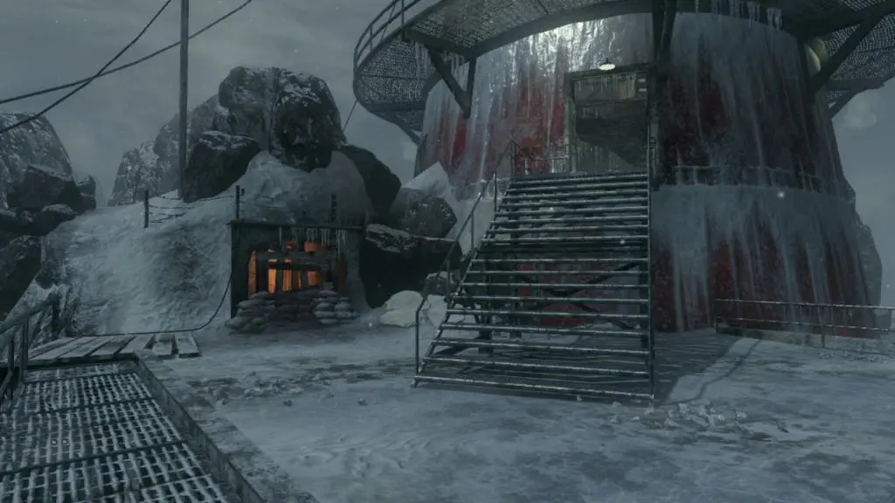
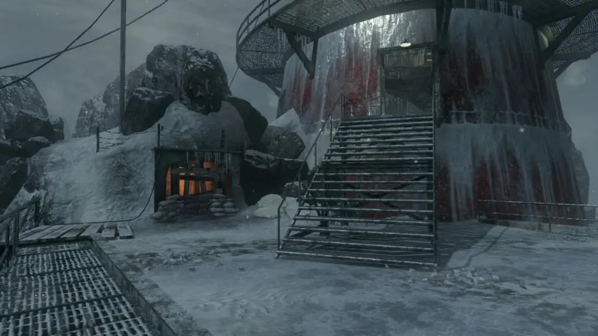

CALL OF THE DEAD

"Un grupo de intrépidos exploradores llega a Siberia. Su sueño es descubrir el origen del misterioso Elemento 115, pero éste se volverá una terrible pesadilla"
DESCRIPCIÓN
Esta entrega es la primera en la que aparecen celebridades de la actualidad luchando contra Zombies y muestra a George A. Romero como uno de los Zombies. Muestra una costa abandonada de Siberia, que cuenta con un buque de carga naufragado, un faro y una escasa costa.
HABITACIONES:
Ice Berg Inicial
Los jugadores aparecen en la orilla con hasta otros tres compañeros de equipo, con George A. Romero apareciendo de un rayo en un charco de agua cercano. Hay dos contornos de armas de tiza allí, como en los últimos tres mapas de Call of Duty: Black Ops Zombies, el Olympia y el M14. Los jugadores pueden elegir abrir uno de los dos barcos diferentes para despejar, ambos cuestan 750 puntos. Uno conduce al faro y el otro conduce al barco averiado. El interruptor de encendido se encuentra en la parte superior de la nave, que tiene el Flinger en el costado del segundo piso.
ADICIONES DEL MAPA
Una nueva ventaja, Deadshot Daiquiri, se encuentra en la parte superior del faro, con un precio de 1500 puntos. antes de subir las escaleras se puede encontrar la caja misteriosa justo debajo de la zona ay una habitacion para avanzar en la historia como tambien la maquina de PHD FLOPPER
Barco Abandonado
En este barco abandonado hay 2 Perks los cuales son JUGGERNOG y DOUBLE TAP el primero antes mencionado se encunetra en la parte de atras del barco justo casi en la entrada de unas escaleras y la otra perk esta ubicado en la otra esquina del mapa. como tambien una ubicacion de la caja misteriosa y justo enfrente de ella esta la palanca para reactivar la electricidad en todo el mapa permitiendo Comprar perks o ventajas al jugador
Cabaña abandonada
se encuentra en la parte de atras del faro donde hay una entrada a el y afuera hay un pequeño lago donde hya posibilidad que surga desde abajo el Pack a Punch y si cruzas el lago puedes acceder ala cabaña donde econtraras ala maquina de Stamin up


ADICIONES
Una nueva ventaja, Deadshot Daiquiri, se encuentra en la parte superior del faro, con un precio de 1500 puntos. Las muñecas Matryoshka regresan de Ascensión, junto con una nueva Arma Maravillosa, la V-R11 hace su debut en este mapa, con la capacidad de transformar a los zombis de nuevo en humanos, y luego huyen asustados y se suicidan arrojándose al agua helada (o asesinados por el jugador), junto con la capacidad de calmar a George (temporal) y hacer que los compañeros de equipo hagan daño infinito y no sean dañados por zombis. El sujeto que fue disparado por el V-R11 también puede causar una distracción entre los zombis y George Romero, por lo que el sujeto puede ser asesinado por la horda o George Romero.
Otra nueva arma maravillosa es el Carroñero; Un rifle de francotirador de cerrojo que dispara proyectiles explosivos que infligen un daño muy alto. Cuando es golpeado con un puñetazo, el carroñero se convierte en la hiena inframuerta, lo que inflige aún más daño, incluido un radio más alto de daño por salpicadura. El Hyena Infra-Dead también tiene un visor térmico.
Easter Egg principal
El huevo de pascua consiste en los personajes originales atrapados en una pequeña habitación oscura, después de que Richtofen aparentemente influyó en el Mecanismo Casimir para teletransportarlos a todos a este puesto de avanzada siberiano. Richtofen exclama que fueron enviados demasiado lejos en el futuro durante el huevo de pascua. La liberación de los personajes originales sirve como el principal huevo de pascua del mapa y otorga el potenciador Lightning Bolt, otorgando al jugador un Wunderwaffe DG-2. Al no tener más necesidad de él, Richtofen se lo deja a las celebridades.
Curiosidades
Este es el primer mapa de Zombis que solo tiene una ventana en la sala de aparición (aunque los zombis aparecen desde el suelo).
Tiene dos tirolinas: una va del barco a la costa y la otra va del faro al barco.
Un nuevo tipo de Zombie: Zombis electrificados, que se crean a través de la luz eléctrica del escenario de George.

COMO FUNCIONA EL PACK A PUNCH
La máquina Pack-a-Punch se colocará aleatoriamente en cualquiera de los tres puntos del mapa
(en un charco de agua cerca de Stamin-Up, Quick Revive o Juggernog). Para acceder a él, el jugador
debe encender la energía, después de lo cual el haz de luz del faro comienza a girar. Después de
un tiempo aleatorio, se escucha un rayo y el rayo comenzará a moverse radicalmente, y finalmente
se detendrá y apuntará a la máquina Pack-a-Punch que se eleva desde el agua. Después de un tiempo,
la máquina Pack-a-Punch volverá a sumergirse en el agua y el haz de luz comenzará a girar nuevamente
(la máquina Pack-a-Punch no puede volver a sumergirse en el agua si hay un arma en ella, por lo que es
seguro usarla incluso en el último segundo).
La máquina no se puede localizar ni utilizar cuando el haz de luz no está apuntando hacia ella.

 
